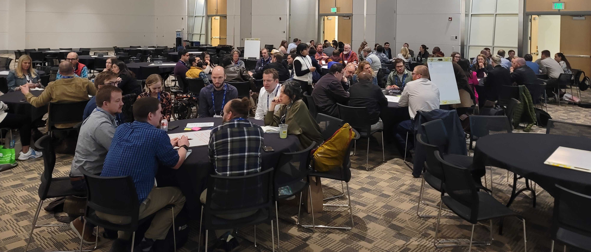

Last Updated: July 2024
Engage with the Technology Division and share your knowledge with others in the planning profession through this initiative made possible with the support of the 2024 American Planning Association's Product Development Grant. This grant will allow the Technology Division to develop a planning technology handbook and a refined version of the "Planning Through the Black Mirror" card game, which together aim to provide accessible, centralized guidance on technology strategy, applications, and ethics in planning practice, while engaging planners in real-world scenarios and best practices.
Click on each circle to view engagement opportunities for experienced professionals and students. Black denotes Handbook action items, yellow denotes card game action items.
The Planning Technology handbook provides accessible, centralized guidance on technology strategy, applications, and ethics in planning practice across planning domain areas. The handbook is supplemented by the Planning Through the Black Mirror card game, which encourages planners to engage with real-life scenarios and evaluate solutions based on best practices.
Handbook Contents
- Planning Through the Black Mirror Game Instructions
- Core Concepts: Ethics and strategy for data, product development, procurement, methods for addressing cross-cutting issues
- Applications and Solutions: Overview of applicability to planning domains (listed below), interrogation of examples of solutions, metrics for evaluation for solution efficacy, tools and resources supporting applications and solutions
OPPORTUNITIES
** UPDATE (4/19/2025) **
The handbook is still under development and will be distributed to SMEs for review before Summer of 2025. The call for case study examples and SME reviewers will remain open until this time.
- - -
This handbook will undergo review and revision throughout the Fall and Winter of 2024. Members and other interested individuals who submitted an interest form will be given the opportunity to review and contribute to handbook contents during this phase.
The handbook will undergo copyediting and design in the Winter of 2024. The handbook will be formatted for digital access.
** UPDATE (4/19/2025) **
The Division hosted an official gameplay session at the 2025 National Planning Conference in Denver, CO.

For more information about availability and publishing format, see section, "Publishing Handbook and Card Game" below.
- - -
The purpose of the Planning Through the Black Mirror card game is to engage planners in exploring and solving real-world planning challenges related to technology through an interactive, educational, and fun card game. The Black Mirror card game serves as a complement to the Technology Handbook.
OPPORTUNITIES
** UPDATE (4/19/2025) ** The Content Development Assistant positions have been filled. Please see the Division Newsletter and future page updates for more details about their work!
OPEN CALL FOR TWO CONTENT DEVELOPMENT ASSISTANTS - Seeking two students to conduct research, collaborate with subject matter experts, and support content development for the "Planning Through the Black Mirror" card game, ensuring content accuracy and relevance.
Please review the role description and apply by August 31st.
Note: Preference is given to Technology Division members, please consider joining if you have not already.
The first draft of the Planning Through the Black Mirror card game content will be completed by Fall/Winter 2024. This initial version will include detailed case studies and scenarios to be reviewed and refined in the subsequent stages.
The card game will undergo review and revision during the Winter of 2024. Feedback from subject matter experts, planners, and Division members will be incorporated to enhance the accuracy, clarity, and educational value of the game.
In the winter of 2024 going into early 2025, the card game will be copyedited and designed. This phase will focus on the visual and functional aspects of the game, ensuring it is engaging, accessible, and ready for production.
The final versions of the Planning Technology Handbook and the Planning Through the Black Mirror card game will be published and made available to all members by the end of February 2025. These resources aim to provide valuable guidance and interactive learning tools for urban planners.
The handbook will be accessible as a downloadable PDF and possibly a limited print edition, while the card game will be offered in digital format as a PDF document and virtual tabletop RPG templates to accommodate different preferences. The division is also considering a limited print edition of the card game as well.